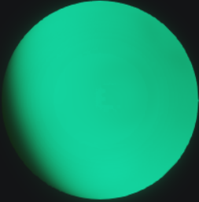
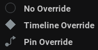
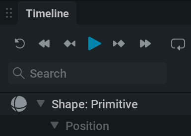
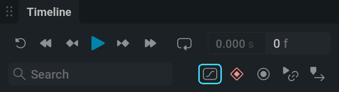

Keyframe Animation#
Setting Keyframes#
Let’s get moving!
{kind=link}

Most parameters in EmberGen can have keyframe animation. This means you can set values on specific frames resulting in a parameter that can change over time.
Let’s say we want our sphere to move up and down.
That means we have to alter its Z-position over time.
Select the Shape: Primitive node and find the Position parameter in the Node Details tab.
{kind=link}

Click on the
 circle next to it to set the override state for the parameter to
circle next to it to set the override state for the parameter to  Timeline Override.
Timeline Override.Clicking on the icon next to the parameter will cycle through the different types of override states. So if you now want to get back to
No Override, for example, you have to click the icon twice.
{kind=link}
A couple of things happen when setting the override state to Timeline Override.
The parameter shows up in the Timeline tab.

The parameter shows up in the Timeline Editor.
{kind=link}

If Create Key When Parameter Exposed (found in Settings/Preferences…/General) is checked a keyframe with the current value appears at the blue playhead

Let’s make our sphere go up and down using keyframes!
You can also set a keyframe by changing the parameter value in the Timeline Editor.
If  Toggle Timeline Autokey A is turned on, moving the sphere in the viewport or altering the value in the properties panel will set a keyframe with the new value on the frame specified by the blue playhead.
Toggle Timeline Autokey A is turned on, moving the sphere in the viewport or altering the value in the properties panel will set a keyframe with the new value on the frame specified by the blue playhead.
If Snap keys to frames  is enabled, the keyframes can only be placed on whole frame numbers. If not, the keyframes can be placed anywhere in between frames.
is enabled, the keyframes can only be placed on whole frame numbers. If not, the keyframes can be placed anywhere in between frames.
There we have it, a sphere moving up and down!
Timeline Editor#
Viewing Keyframes#
First, let’s fit the keyframes nicely in our timeline editor. You can do this by using the icons in the top right corner.
 Pan and zoom the timeline to perfectly fit all the keyframes in view.
Pan and zoom the timeline to perfectly fit all the keyframes in view.Pan and zoom the timeline to perfectly fit the selected keyframes in view.
Reset the vertical zoom to default in the Curve Editor. When using Shift +
 click you can also reset the horizontal zoom to default!
click you can also reset the horizontal zoom to default! Toggle the panel to fullscreen if you want to edit your keyframes with the maximum screen space.
Toggle the panel to fullscreen if you want to edit your keyframes with the maximum screen space.
{kind=link}
{kind=link}
You can manually move around the timeline using the following controls:
Pan the timeline by holding down the middle mouse button and dragging or by using the scrollbar at the top of the timeline editor.
Zooming the timeline by holding down Ctrl and scrolling. Note that the pivot for zooming is at your cursor’s location.
Editing Keyframes#
Using the timeline editor you can edit your keyframes to your liking. Let’s have a look at the things we can do here.
Create a keyframe by double
clicking or shift clicking.Move keyframes around by LMB and dragging. If Snap keys to frames
 is enabled, keyframes will always move a whole frame at the time.
is enabled, keyframes will always move a whole frame at the time.Box-select multiple keyframes by LMB and dragging.
Select multiple keyframes holding down Ctrl + LMB.
Select all keyframes with Ctrl + A
Copy keyframes with the right-click menu or Ctrl + C
Cut keyframes with the right-click menu or Ctrl + X
Paste keyframes with the right-click menu or Ctrl + V
Delete keyframes with the right-click menu or the Delete key.
Scale your keyframe animation using Shift + Alt + LMB drag pivoting from the first keyframe. This can be helpful if you want to retime a part of your animation.
- Aligning keyframes left or right by right-clicking a selection of keyframes and picking an option from the Align menu. When putting keyframes on multiple parameters aligning can help to tidy up and perfect your timeline.
Left will move all the selected keyframes to the position of the first keyframe.
Right will move all the selected keyframes to the position of the last keyframe.
Snap keyframes to the nearest whole frame number with the Snap To Frames option in the right-click menu.
Curve Editor#
{kind=link}

The Curve Editor can be toggled using
{kind=link}
This editor gives a visual representation of where the values are going over time.
All the controls for the timeline editor apply here as well, but there are some extra things you can do and see.
Viewing Keyframes#
Zoom the timeline vertically by holding down Ctrl + Shift and scrolling. By zooming in vertically you can more clearly view smaller changes in the graph.
Zoom the timeline both horizontally and vertically using the scrollwheel
With multiple keyframes selected you can find the Fit View options in the right-click menu to fit the selected keyframes to view either horizontally, vertically, or both.
{kind=link}
Editing Keyframes#
Move one or more keyframes vertically (changing the keyframe values) using Ctrl + Shift +
clicking and dragging.Freely move one or more keyframes vertically and horizontally using
clicking and dragging.- Two more options are added to the Align right-click menu:
Top will move all the selected keyframes up to the same value as the keyframe with the highest value.
Bottom will move all the selected keyframes down to the same value as the keyframe with the lowest value.
Interpolation Mode#
The Interpolation Mode defines the method of interpolating the values from one keyframe to another.
You can change the Interpolation Mode of the keyframes in the right-click menu.
- There are a few options:
Constant will fully change the value when reaching a keyframe without any in-between values. This is the default for animating checkboxes and dropdown menus since they don’t have any in-between values.
Linear will draw a straight line from one keyframe to another in the Curve Editor. Values will move from one keyframe to another with a constant speed.
Smooth will generate a smooth line from one keyframe to another. This avoids having hard transitions in values.
Bézier will interpolate the values based on the bézier handles. When using this mode you can see the bézier handles when selecting a single keyframe. You can change the interpolation by LMB and dragging the dots at the end of the bézier handles. A flat part of the curve means the values change slowly and a steep part of the curve means the values change quickly.
- When using the Bézier mode, there are a few handle types you can use also found in the right-click menu.
Aligned The handles can be moved freely and can have any direction and length. For this type, one handle is always in the inverted direction and has the same length as the other one.
Free The handles can be moved in any way separate from each other.
Auto Clamped This is the default behavior. For this type, the handles can never go beyond the previous or next keyframe. Note that when changing the handles the type will be set to Aligned.
Auto Vectored This will point the left handle towards the previous keyframe and the right handle towards the next keyframe. Note that when changing the handles the type will be set to Free.
You can always reset the bezier handles to default for the selected keyframes by clicking on Reset Handle in the right-click menu.
Note that you can also change all these settings in the Timeline Editor, but you won’t be able to see the effect it has on the curve or change the Bézier curve.
Timeline Recording#

Timeline recording allows you to turn your manual changes to a parameter into keyframes in real time. This can be useful to animate things quickly or to just add that human touch!
Making a timeline recording takes the following steps:
Set the desired parameter to Timeline Override. This means
clicking on the circle next to the parameter. The icon will appear next to it.
Make the parameter changes you want to be recorded.
To stop recording, toggle timeline recording again, reset the simulation, or
 pause the simulation.
pause the simulation.
{kind=link}
{kind=link}